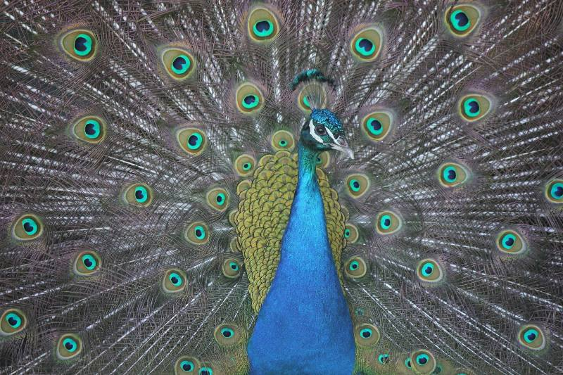

Tá clú agus cáil ar an scríbhneoir Seiceach Jaroslav Hašek as an úrscéal aoire ‘An Dea-Shaighdiúir Švejk’. Ba scríbhneoir bisiúil grinn é Hašek agus, sa bhreis ar an mhórshaothar cáiliúil sin, scríobh sé an-chuid scéalta beaga éagsúla lena linn a d’fhoilsítí sna nuachtáin. Seo aistriúchán (ón tSeicis) ar cheann acu, dar teideal ‘Anonymní dopis’, ón bhliain 1911.

Bhí Cunta Friedrich ag marcaíocht ina chóiste oscailte trí shlua daoine. Bhí an slua ag beannú dó is á cheiliúradh go gealgháireach. Bhí an Cunta ag beannú ar ais don slua agus bhí aoibh an gháire ar a aghaidh. Go tobann, landáil duilleog páipéir ar an suíochán folamh taobh leis.
“Cad é seo?” a cheap Cunta Friedrich. D’oscail sé an duilleog agus léigh sé: “A Shoilse, is sibhse an t‑amadán is mó ar dhroim na cruinne!”
Stad Cunta Friedrich de bheith ag gáire. Dúradh sna nuachtáin an lá dar gcionn gur bhuail tinneas é agus gur ghá deireadh a chur leis na himeachtaí ceiliúrtha. D’ordaigh an Cunta tiomáint ar ais go dtí an pálás.
Ar ais sa phálás dó, chuaigh sé go tapa go dtí a oifig agus scrúdaigh sé an litir go géar. “A Shoilse, is sibhse an t‑amadán is mó ar dhroim na cruinne!” a léigh sé arís is arís eile. “Níl an litir sínithe fiú!”
Mháirseáil sé suas síos a oifig, a lámha fillte taobh thiar dá dhroim. “A Shoilse, is sibhse an t‑amadán is mó ar dhroim na cruinne!” “Is ea,” a cheap sé, “níl rogha eile ach an Comhairle Stáit a ghairm!”
“A fheara uaisle,” a dúirt Cunta Friedrich go sollúnta leis an dáréag fear a bhí cruinnithe roimhe faoi dheifir. “Inniu agus mé ag freastal ar ócáid phoiblí chun daichead bliain sa rialtas dom a cheiliúradh, chaith duine éigin – ciontóir anaithnid – an litir seo isteach chugam sa chóiste. Léigí libh: ‘a Shoilse, is sibhse an t‑amadán is mó ar dhroim na cruinne!’”
Tháinig dath bán ar aghaidheanna na bhfear. Ní raibh a fhios acu cad ba cheart a rá, ná ar cheart rud ar bith a rá, go dtí go ndúirt Barún Karl go stadach: “a Shoilse... an féidir, b’fhéidir... nach daoibhse, a Shoilse, a bhí an litir ceaptha?”
“Seafóid!” a bhéic Cunta Friedrich. “Tá súil agam go bhfuil a fhios ag an Bharún gur mise an t‑aon duine sa tír a bhfuil an teideal ‘A Shoilse’ ag dul dó. Agus, toisc gur ‘A Shoilse, is sibhse an t‑amadán is mó ar dhroim na cruinne’ atá sa litir, níl amhras gur domsa atá sé ceaptha. Is féidir linn go léir a bheith ar aon tuairim faoi seo.”
“Is é leas an stáit é,” a lean Cunta Friedrich dá chaint, “go n-aimseofaí an ciontóir, an té a raibh sé de dhánacht ann amadán a bhaisteadh orm, toisc gur tréas i gcoinne an stáit é. Fágaim an cás in bhur lámha. Thairis sin, tá súil agam go rithfidh an Pharlaimint féin, nuair a bheidh sí ina suí amárach, go rithfidh sí rún tacaíochta domsa mar Cheann Stáit, sa nóiméad deacair seo ina bhfuil amhras á chaitheamh ar údarás an rialtais.”
Ba go déanach san oíche a d’fhan an Comhairle Stáit i mbun cruinnithe fós, iad ag plé an cháis ó gach taobh. Cuireadh fios ar Stiúrthóir na bPóilíní fiú. An lá dar gcionn bhí an Pharlaimint ina suí. Léadh rún tacaíochta don Cheann Stáit agus ritheadh é, cé nach raibh tuairim dá laghad ag na feisirí cén fáth é ná cad chuige é.
Bhí teannas míchompordach san aer. Níor thuig aon duine, uasal ná íseal, cad a bhí ag tarlú. Bhí Stiúrthóir na bPóilíní faoi bhrú go háirithe. “Cad a dhéanfaidh mé?” a d’fhiafraigh sé de féin. Chuir sé fios ar an Chartlann Stáit agus d’iarr sé cóip den litir.
“Cad a dhéanfaidh tú?” a d’fhiafraigh a rúnaí de. Ach bhí plean ag Stiúrthóir na bPóilíní anois. “Fan go bhfeice tú,” a dúirt sé lena rúnaí agus é ag cuimilt a lámh le chéile. “Fan go bhfeice sibh go léir, déanfaidh sibh go léir iontas de mo chuid bleachtaireachta!”
Tugadh an litir go dtí an Chlólann Stáit agus, tráthnóna den lá céanna, bhí an phríomhchathair breac le póstaeir mhóra arna eisiúint ag Stiúrthóireacht na bPóilíní:
DUAIS 1,000 MARK
a gheobhaidh aon duine a nochtfaidh cé a scríobh an litir seo a leanas nó cé a chaith isteach í i gcóiste an Cheann Stáit.
Faoi sin bhí cóip den litir: “A Shoilse, is sibhse an t‑amadán is mó ar dhroim na cruinne!”
Faoin oíche den lá céanna bhí gach duine sa tír ar an eolas gurb é an Ceann Stáit an t‑amadán is mó ar dhroim na cruinne. Cuireadh Stiúrthóir na bPóilíní ar pinsean an mhaidin dar gcionn.